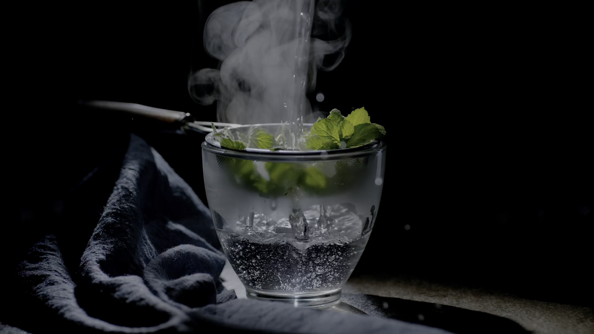

Hyperframes · HDR Regression Suite
A study in light,
unbounded.
Volume II
HDR · BT.2020 · PQ
Plate I
HDR · 10-bit
SMPTE 2084
BT.2020 / PQ
1000Peak nits

Plate II
16-bit RGB
PNG · linear-light
HDR reference
16bits per channel
Plate III
HDR · 10-bit
Studio cut
BT.2020 / PQ
∞specular highlights
Composition · Data Drift
HDR ·
the wider gamut.
BT.2020 · PQ · 10-bit
End of Volume II